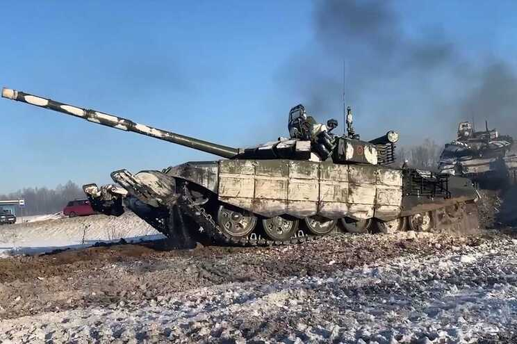

Tlm:+351 252 291 700 | E-mail: noticias@esmad.pt
NATO admite "otimismo cauteloso" mas quer ver desanuviamento no terreno

O secretário-geral da NATO comentou, esta terça-feira, que a abertura manifestada pela Rússia para resolver o conflito com a Ucrânia pela via diplomática permite um "otimismo cauteloso", mas sublinhou que não se vê ainda uma diminuição da escalada no terreno.
"Até agora, não vimos qualquer desescalada no terreno, nenhuns sinais de redução da presença militar russa nas fronteiras com a Ucrânia, mas vamos continuar a monitorizar e a seguir atentamente o que a Rússia está a fazer. Mas os sinais que chegam de Moscovo, relativamente à vontade de prosseguir os esforços diplomáticos, dão alguma razão para um otimismo cauteloso", declarou Jens Stoltenberg.
O secretário-geral da Aliança Atlântica falava numa conferência de imprensa no quartel-general da NATO, em Bruxelas, de projeção de uma reunião de ministros da Defesa da organização que vai decorrer entre quarta e quinta-feira, e na qual Portugal estará representado pelo ministro João Gomes Cravinho.
Comentando que, nesta reunião, que contará com a participação do ministro da Defesa da Ucrânia na sessão de quinta-feira, os Aliados discutirão aquela que é "a maior ameaça à segurança europeia das últimas décadas", Stoltenberg disse esperar que ao longo dos próximos dois dias seja possível avaliar "se há sinais", no terreno, de um efetivo desanuviamento no terreno ou não.
Para já, insistiu, a "concentração sem precedentes" de forças e meios militares nas fronteiras com a Ucrânia permite à Rússia lançar um ataque em grande escala "a qualquer momento" e sem aviso prévio.
"Tudo está agora a postos para um novo ataque. Mas a Rússia ainda tem tempo para se afastar da beira do abismo. Que pare de se preparar para a guerra e comece a trabalhar para uma solução pacífica. O movimento de forças, de capacidades russas não representa uma inversão da escalada", afirmou.
O secretário-geral da NATO disse esperar que todos os membros da Aliança voltem a expressar, na reunião ministerial desta semana em Bruxelas, o seu "apoio político à Ucrânia, à soberania e integridade territorial da Ucrânia", adiantando que será também discutido o "apoio técnico" que pode continuar a ser prestado a Kiev, bem como o reforço da "postura defensiva" da Aliança a leste.
A Presidência russa (Kremlin) deu hoje conta do início da retirada de algumas das suas tropas de perto das fronteiras da Ucrânia, denunciando a "histeria ocidental" sobre uma suposta invasão iminente do país pela Rússia.
"Sempre dissemos que após a conclusão dos exercícios, (...) as tropas regressariam às suas guarnições originais. Isto é o que está a acontecer, este é o processo habitual", disse o porta-voz presidencial russo, Dmitry Peskov, citado pela agência francesa AFP.
Segundo Peskov, Moscovo irá no futuro organizar outros "exercícios em toda a Rússia" por ter o direito de o fazer onde quer que considere apropriado dentro do seu território.
Peskov denunciou uma "campanha absolutamente sem precedentes para provocar tensões" da parte do Ocidente, em particular dos Estados Unidos da América (EUA), com os alertas sobre uma invasão iminente da Ucrânia pela Rússia.
"Este é o tipo de histeria que não se baseia em nada", disse o porta-voz do Kremlin.
O Ministério da Defesa da Rússia anunciou também hoje que algumas das unidades que tinham sido enviadas para próximo das fronteiras da Ucrânia vão regressar aos quartéis de origem por terem terminado os exercícios militares em que estiveram envolvidas.
"As unidades dos Distritos Militares do Sul e do Oeste que cumpriram as suas tarefas já começaram a carregar pessoal e equipamento nos meios de transporte ferroviário e automóvel e começarão hoje a dirigir-se para as suas guarnições militares", disse o porta-voz do ministério, major-general Igor Konashenkov, citado pela agência russa TASS.
Num comentário publicado na rede social Telegram, a porta-voz do Ministério dos Negócios Estrangeiros russo, Maria Zakharova, disse que a "propaganda da guerra ocidental" foi hoje humilhada com o anúncio do Ministério da Defesa.
O dia "15 de fevereiro de 2022 ficará para a História como o dia em que a propaganda da guerra ocidental falhou. Humilhada e destruída sem um único tiro disparado", comentou a porta-voz do ministério tutelado por Serguei Lavrov.
O anúncio aconteceu no dia em que o Presidente russo, Vladimir Putin, recebe no Kremlin o chanceler alemão, Olaf Scholz, para falarem sobre a crise.
Scholz deslocou-se a Moscovo depois de ter conferenciado com as autoridades ucranianas em Kiev na segunda-feira.
Os EUA alertaram, na sexta-feira, que a Rússia podia atacar "a qualquer momento" e aconselharam os seus cidadãos a sair da Ucrânia, no que foram seguidos por vários países, incluindo Portugal.
O Ocidente acusou a Rússia de ter concentrado mais de 100.000 tropas nas fronteiras da Ucrânia para invadir novamente o país vizinho, depois de ter anexado a península ucraniana da Crimeia em 2014.
A Rússia negou sempre o desejo de guerra, mas exigiu garantias para a sua segurança, incluindo uma promessa de que a Ucrânia nunca será membro da Organização do Tratado do Atlântico Norte.
Esta exigência foi rejeitada pelo Ocidente, que propôs em troca conversações sobre outros assuntos de segurança, como o controlo de armas ou visitas recíprocas a infraestruturas sensíveis.